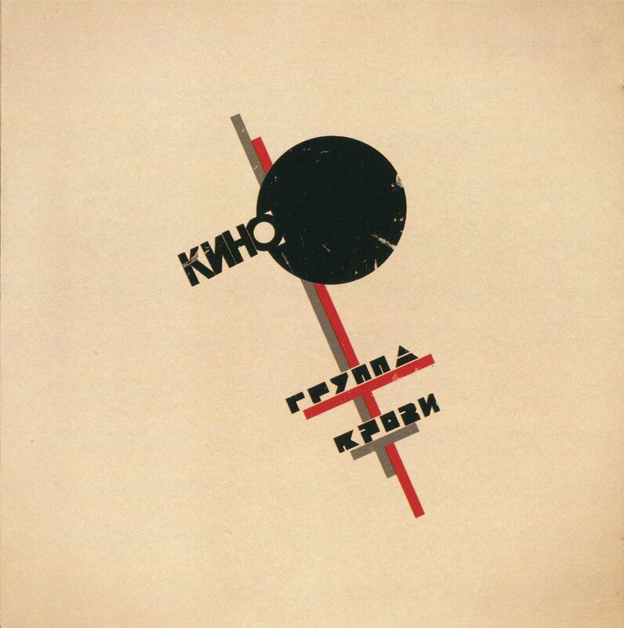
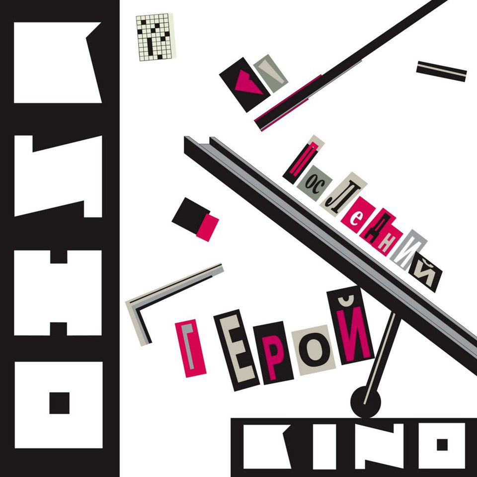

Дискография
Альбомы, определившие звучание группы «Кино» и оставившие след в истории русской рок-музыки.

Группа крови (1988)
- Группа крови
- Закрой за мной дверь, я ухожу
- Мама, мы все сошли с ума
Самый узнаваемый альбом, символ перемен и свободы.

Чёрный альбом (1990)
- Кукушка
- Невесёлая песня
- Сказка
Посмертный альбом Цоя. Финал истории «Кино».

Последний герой (1989)
- Последний герой
- Следи за собой
- Печаль
Сборник для международной аудитории. Хиты с новым мастером.
Это не любовь (1985)
- Это не любовь
- Фильмы
- Весна
Мелодичный и лиричный альбом о любви и одиночестве.
Начальник Камчатки (1984)
- Камчатка
- Я — асфальт
- Этот поезд в огне
Назван в честь котельной, где работал Цой. Шаг к узнаваемости.

46 (1983)
- В наших глазах
- Троллейбус
- Это - любовь
Эксперименты со стилем и текстами. Второй альбом.

45 (1982)
- Мои друзья
- Электричка
- 45
Дебютный альбом с участием Гребенщикова.